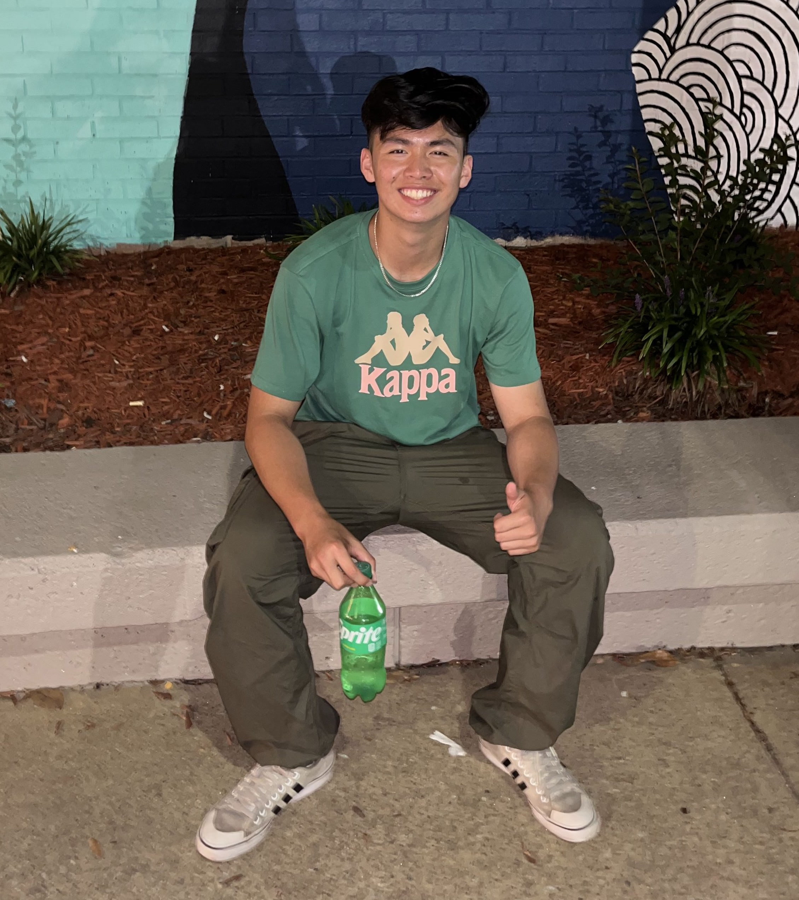
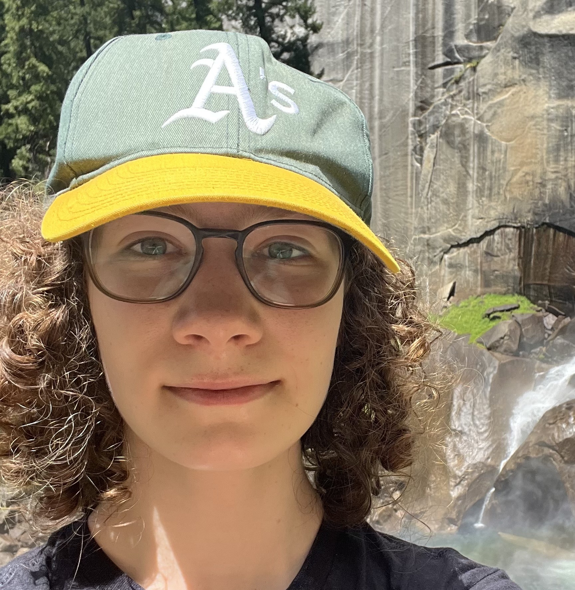
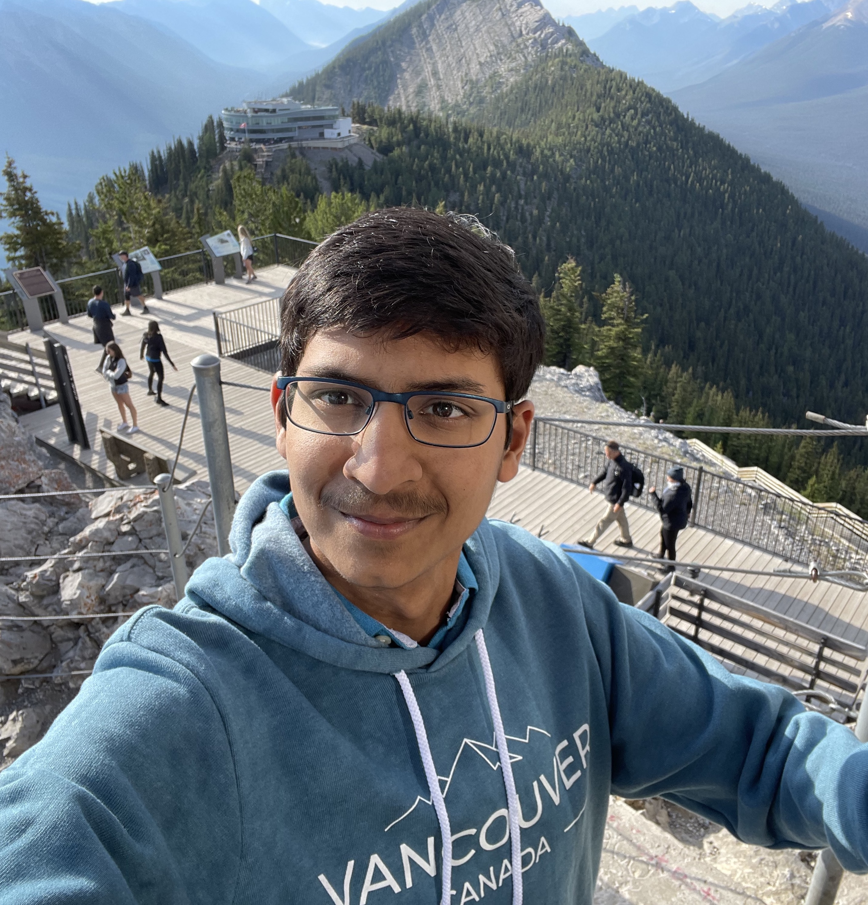
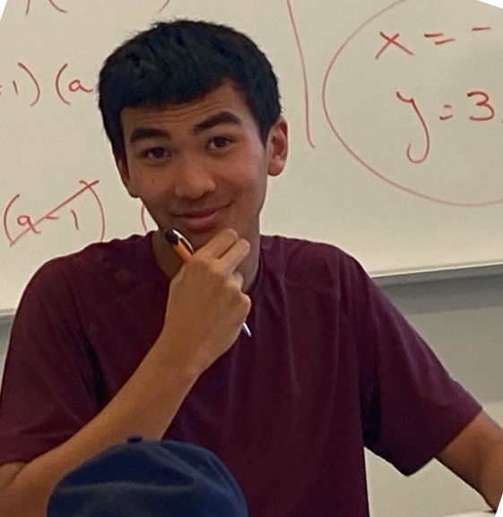
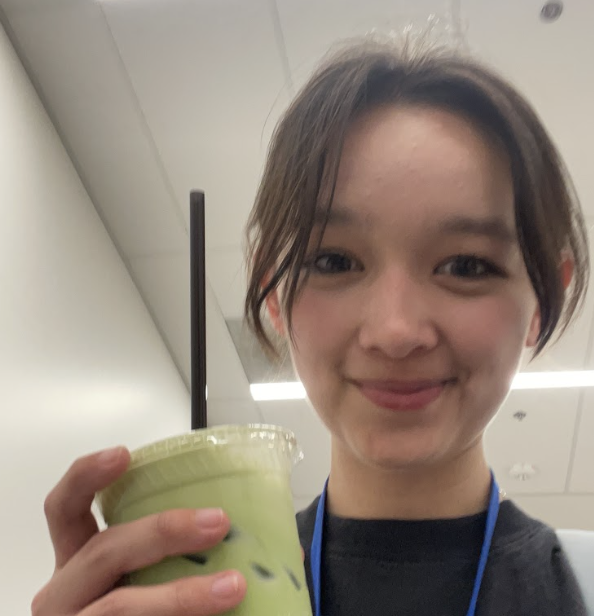
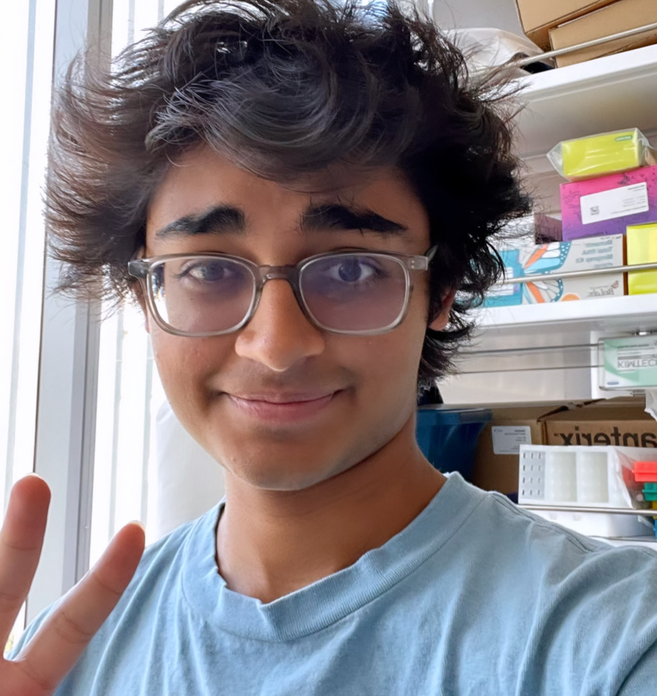
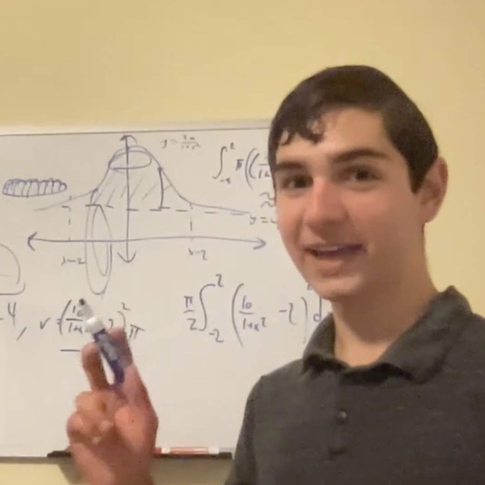
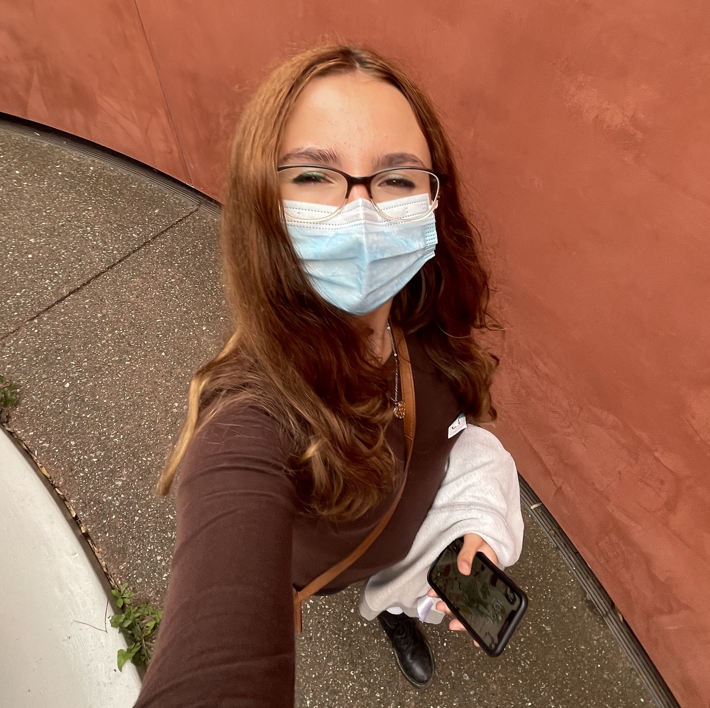

Select your math level and free period, and look through the bios of available tutors.
When you're ready, fill out this form to request a tutor
Angelina Peng '23
Angelina Peng
For as long as I can remember, math has always been one of my favorite subjects. I’ve always loved the challenge that comes with difficult questions, as I love the process of applying different methods and mathematical concepts as well as the satisfaction that comes with resolving said questions. When I first came to CPS, I definitely disliked the Exeter method with a passion, because it was nothing like I had ever experienced and it was a lot harder for me to approach. Now, I absolutely love how the math curriculum is structured, as I enjoy having to learn concepts by puzzling through questions and having to prove theorems and mathematical equations on my own. Other than just having a passion for math, I absolutely love tutoring, so don’t hesitate to schedule a meeting or just talk to me if you need any help. I always have B free and G & H sometimes, but would also be happy to meet during lunch, Faculty Collab, etc. Feel free to reach out if you have any questions at all by emailing me at apeng@college-prep.org!
Adie Guo '24
Adie Guo
I’ve grown up with math and I do indeed love math not only for the satisfaction it brings, but the discussions it brings. Facilitating an environment of friendly debate as well as guiding others to the solution is my kind of teaching. I’m extremely open to help with questions about the school program and questions outside of it too. If you are up to heated discussions or just chilling doing math, please reach out! I strongly suggest meeting up with someone if you ever need anything in general!

Derek Wang '23
Derek Wang
Hello everyone! I’m Derek and I’m a senior in Math 6. Math has always been one of my favorite subjects and general areas of study. When I first came to CPS, the Exeter method did not click instantly, as I was more used to listening to structured lectures; however, over time I’ve grown to love solving problems above all else, since they help me learn the best, and the feeling of pleasure after correctly answering a challenging question is always worth it. I feel that the best way to learn any math problem is not always by getting directly to the solution, but rather learning different approaches and finding which one works best for a given problem. Throughout my math journey, I’ve always had sources of help by my side, whether those were peers, parents, or teachers, and I’d love to reciprocate the support I’ve received to anyone who may need it on problems, concepts, or anything math-related. I am free during most G and H Blocks and am more than happy to meet/chat with anyone during lunches or unused community blocks. My email is dwang@college-prep.org; please don't hesitate to reach out!
Julian Chen '24
Julian Chen
Hello! My name is Julian, and I'm a junior in math 5i! I'm so excited to be a math squad tutor again this year, and to help you with whatever math-related problems you have, be them big or small. Starting high school online, I know the struggles of plunging head-first into the Exeter method; I mean, teaching yourself math?? But I've found that learning the concepts yourself leads to a fuller and deeper understanding in the end. If you work with me, you'll find that I ask you many questions; so many questions that you'll end up feeling like the math tutor yourself! But most importantly, I want to make math enjoyable and fun, as it is for me! Confidence is everything, and I know you can become that "math person"! So please feel free to text me at (510)-230-3937 or email me at jchen@college-prep.org if you want to meet one on one. See you soon!

Loula Barnes '24
Loula Barnes
Hi, I'm Loula, a junior in math 4i! I love helping out friends with math, and I'm excited to chat with some new people through math squad. Sometimes the methods we learn in math don't feel intuitive, so I'll try to guide you through the logic behind the formulas and steps to demystify them.
Arnav Ratna '24
Arnav Ratna
Hey everyone! I'm Arnav, and I'm a junior. I really love answering questions, whether they're about a specific problem, a general concept, or even some cool property of math. You can email me at aratna2@college-prep.org or text me at 510-358-0035 to schedule a meeting. I look forward to helping you!
Alessandra Sabelli '24
Alessandra Sabelli
Hey y’all! I’m Alessandra and I’m a junior in 5i.
While I’ve always loved learning math, CPS's Exeter method was a big adjustment for me. I owe so much to my amazing peers for their help and patience. I'd love to pass that patience and compassion along to anyone who needs help with anything math-y!

Araddhya Tibrewall '24
Araddhya Tibrewall
Ahoy! I'm Araddhya, and I'm a junior in Math 5i, who—duh—loves math. Unlike most normal people, I won't give you answers, but will ask questions to your questions until you've reached the solution, so you feel pride and accomplishment and all those warm fuzzy feelings. Helping you > doing my HW.
Natalie Goldberg '24
Natalie Goldberg
Hey my name is Natalie and I am extremely excited to be able to teach and help others! I love to have discussions as a way to get to know others and meet knew people. In terms of my teaching philosophy I tend to be patient and try to understand the thinking of others. What is most beneficial for me and my students is for them to explain how they perceive a certain problem, and go on from there. I can't wait to have meeting with people and hope that it's both helpful and fun for others!

Zane Qureshi '24
Zane Qureshi
Hey y'all! I'm Zane, a junior in math 5i, and I'm super excited to be in Math Squad again this year! I've always loved learning math, so I cannot wait to help you this year! I love explaining specific theorems and concepts, but I also enjoy talking about specific problems that are giving you issues. I try to guide people through solutions and allow them to discover as much of the solution as possible, so you are still solving the problem, not me. I'll help you with as many questions as you can think of and I like keeping things chill and fun! If you see me around, don't hesitate to talk to me or you can shoot me an email and we can schedule something!

Katie Wendelken '24
Katie Wendelken
I'm a very patient teacher, and I like to hear all of your thoughts on the problem and responding to those before giving my own suggestions.
Henry Gustafson '24
Henry Gustafson
Hi! I'm Henry and I'm a junior in Math 5i (AP Calculus BC). I have always loved math, but I know it can be a very challenging subject. Math at College Prep can be especially difficult if you are stuck on a problem, but I think it is important to be patient because when you can find the solution to a problem yourself, you can get a really deep understanding of the concept. I'd love to help you work through any problems you are stuck on! I'm free F block, B3, and open periods/lunches. Feel free to email me at hgustafson@college-prep.org (or text: 415-730-8494).
Katelyn Ma '24
Katelyn Ma
Hi! I'm Katelyn, and I am currently a junior taking Math 6 with Kevin. I've always enjoyed math, and it's been one of my favorite classes since elementary school. When understanding concepts in math, I like to break them down into smaller pieces so that the whole pictures makes more sense. I also believe that talking things through is one of the best ways to understand something! I love helping people, so if you ever need help with anything math-related, please feel free to contact me at kma@thecollegepreparatoryschool.org or 415-370-1815. I'm always happy to help!

Rahim Malik '23
Rahim Malik
Hi there! I’m Rahim and I’m a senior in Math 6. I find math pretty fun, but when I don't understand it, it's pretty much a nightmare. I like teaching visually, mainly because I'm a visual learner. A typical meeting with me with involve lots of us both doing math on whiteboard tables. We'll go through one or two practice problems together, then you'll do a few practice problems yourself to nail in the concept.
My free periods are F and H2, but most lunches work for me too. Email me at rmalik@college-prep.org!
Finn McKibbin '23
Finn McKibbin
I am super excited to be one of your Math Squad tutors this year! I think the CPS math curriculum especially emphasizes understanding the concepts at large, which is why it can feel so impenetrable at times. My goal as a tutor is to help you over this barrier by simplifying and making these concepts feel intuitive, while still letting you be the one who solves the problem, so that you feel practiced and confident when applying that concept to new problems down the road. I want to supplement the often indirect way the problem sets introduce new topics with direct and patient discussion where we can clarify exactly what you are unsure about.
I love thinking about math, but I love talking about math with others even more, so if you ever feel like something in math giving you a challenge, even if you're not sure what it is or don't have a homework problem to solve it, that is okay! Please sign up during one of my free slots, and I'd be happy to talk about it with you :)
Jiaqi Yu '23
Jiaqi Yu
Hi! I’m Jiaqi and I’m a senior in math 6.
I really love math and the satisfaction that comes from solving a problem. The Exeter system that CPS uses can certainly be difficult at first (and it definitely was for me), but I’ve come to understand and appreciate it over the course of the past couple years. I’ve also always loved helping people with math since middle school. I’d be more than happy to help anyone tackle homework they’re having trouble with. I’d be happy to help during G, H blocks or lunch. I have things scheduled during H blocks about half of the time, so try to check in with me first! Feel free to email me at jyu@college-prep.org or text me at (510)361-9972 if you want to meet!
Jude Partovi '23
Jude Partovi
Hi all, my name is Jude and I'm a senior. Aside from doing math homework, my hobbies are coding, guitar and volleyball. As a math tutor, I will help you find out the answer yourself, not just give it to you. I believe that math isn't about memorizing equations or solutions, but rather about deeply understanding methods and thus being able apply them dynamically to an array of scenarios. Come to me with any questions you have and I'm sure that together we can find the solution.
Erin Suh '23
Erin Suh
Hello! Math here is hard. I have spent 4 hours on a single KhanAcademy set. I know how it feels to scrape by with a shaky understanding of the material and a frustrating inability to apply it on my own. But I have overcome all the concepts that plagued me, and I have picked up some study tricks along the way that I do not plan on keeping all to myself. If you need help, just ask! :)
Julian Vuong '23
Julian Vuong
Hey everyone! I’m Julian, and I’m a senior. I'm in Math 6 right now, and I've taken 3BC (now 3i), 4i, and AP Calc BC (5i).
I have loved math for my whole life, and I mostly enjoy what happens in class (if you're here to rant about geometric probability, I agree: it makes no sense). I want to use my knowledge and enthusiasm to support you all in your classes, from understanding a tough concept to looking for some extra review before a big test (or multiple midterms), so that you can share my passion for math too.
I’m more than happy to help with any questions you have or to just talk! I’m free during C block and sometimes during G and H blocks, so make sure to check with me in advance to confirm. Please don’t hesitate to reach out! Feel free to contact me at jvuong@college-prep.org or (925) 548-3035. See you soon!

William Pirone '23
William Pirone
Hey! I'm William, and I like to teach by solving problems by simplifying them down into easier, more digestible components to come up with an easy-to-follow solution. I also enjoy proofs, word problems, and all things calculus. Feel free to reach out if you have any questions!
Quinn Cook '24
Quinn Cook
I like having fun (because yes math can be fun) and eating snacks.
Christian Park '23
Christian Park
I believe that math gets tough, especially at this school, but that each student has it in them to work through the challenges, and that sometimes it takes a little guiding.

Alexandra Kozlova '24
Alexandra Kozlova
Hi I'm Alex 🐐! I'm currently a junior in math 5. I enjoy working through problems slowly, and finding new ways to make math fun! I genuinely enjoy helping others with math, and I hope to inspire a passion for math in others :) I know math can get really tough, and certain problems can become incredibly tedious, so as a math squad member I will be there for you if you need a patient, helping hand. My free blocks are B and F, please reach out to me by email (akozlova@college-prep.org).